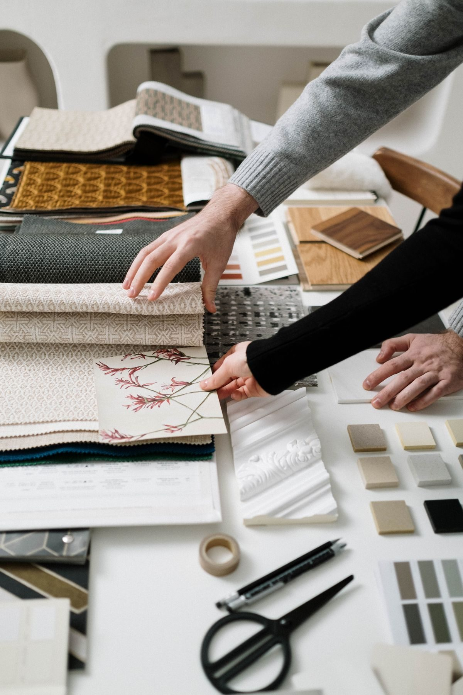
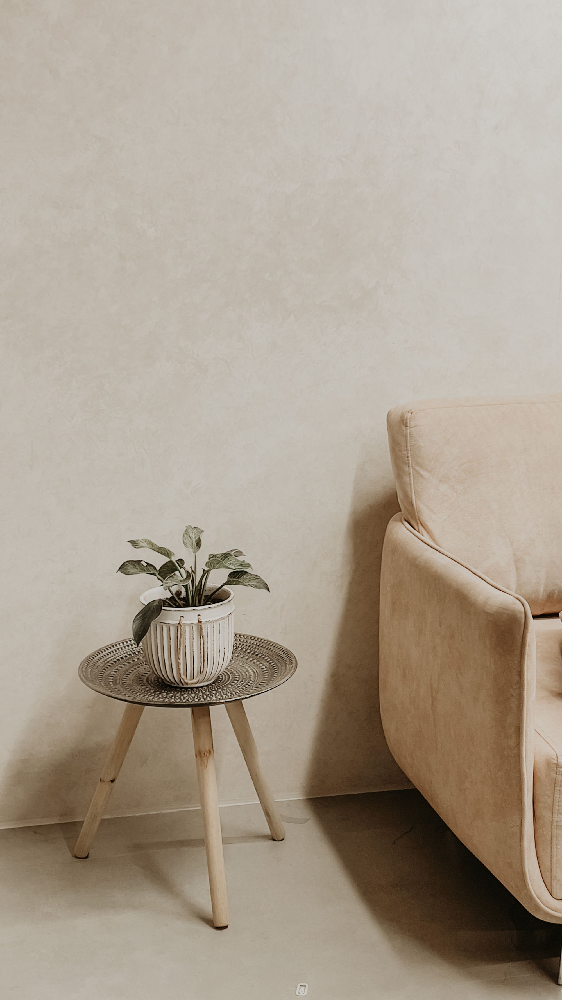
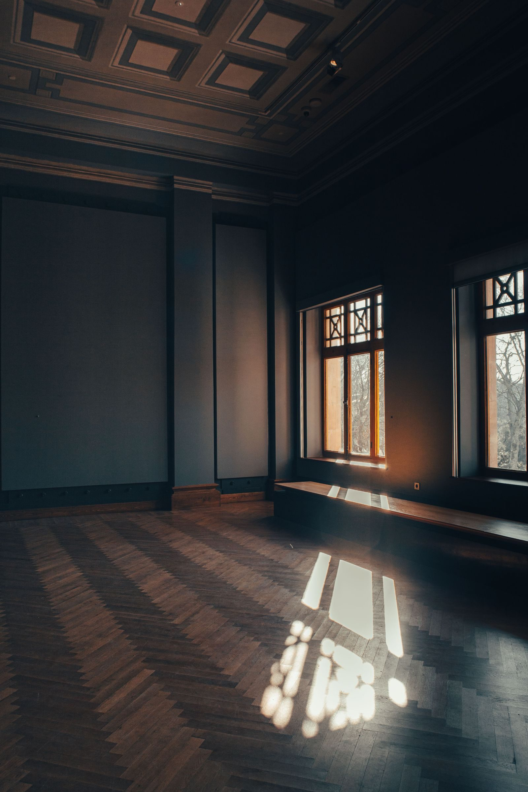
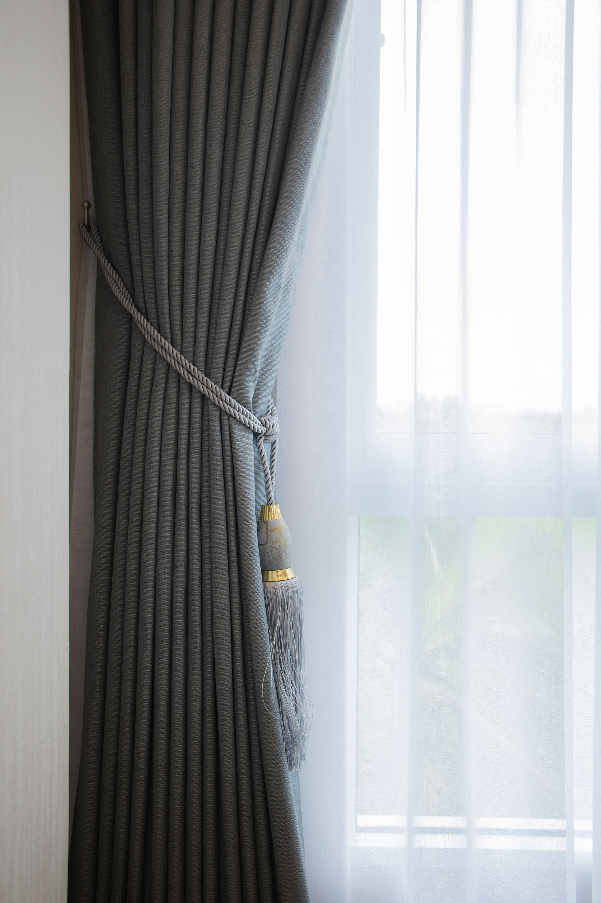

A tervrajztól a kész otthonig
Teljes lakásfelújítás és berendezés egy kézben: alaprajz, világítási és gépészeti terv, anyagok, bútorok, textilek, és a kivitelezők koordinálása az átadásig.
Teljes lakásfelújítás és berendezés egy kézben: alaprajz, világítási és gépészeti terv, anyagok, bútorok, textilek, és a kivitelezők koordinálása az átadásig.

A tér teljes újragondolása az életmódjához igazítva: hol van fény, hol kell tárolni, hogyan mozog a család.

Megbízható szakemberek, egy felelős. Én tartom a kapcsolatot a kivitelezőkkel, Önnek egyetlen dolga marad: beköltözni.

Az utolsó réteg, amitől a ház otthon lesz: bútorok, lámpák, függönyök a saját varrodából, textilek és az átadás.




Szállodaszobák, apartmanok és vendéglátóhelyek berendezését is vállalom. Olyan tereket tervezek, amelyeket a vendég lefotóz, az üzemeltető pedig könnyen karbantart.
A tér akkor kész, amikor élni kezdenek benne.Nagy Mariann Időpontkérés